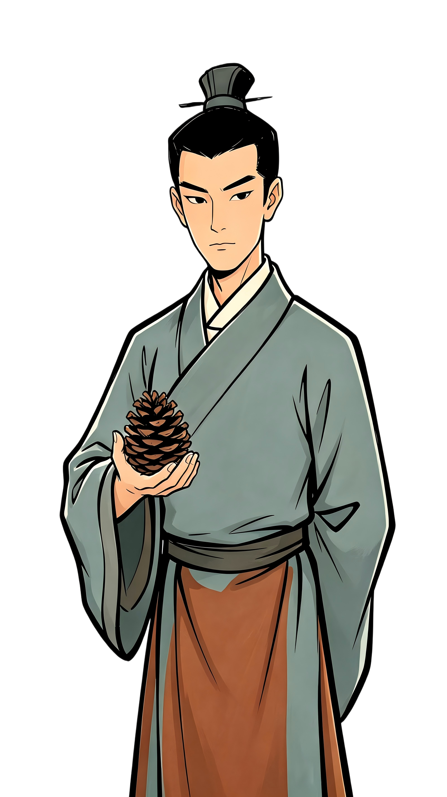

🌐 EN
⛶ 全屏
如期
As Promised.
拨雾寻踪
继往开来
辞别归去
如期
第一章 · 神道萤火
As Promised.

言说
萤火虫 0/5
神道尽头，鹤影掠过。东方，有光。
跟随鹤鸣，探骊启匣
—— 本章结 ——
九章择路
收入囊中
云 笺
以云端笔墨，续古今之谈
洒金笺
三十轮对话 · 浅酌小叙
¥6
薛涛笺
一百轮对话 · 秉烛长谈
¥16
流沙笺
三百轮对话 · 常伴左右
¥32
关 闭
行 迹
以步履丈量古今之间 · 郑州
郑州商城
早商
同城
开封州桥
北宋
约 60 km
新乡潞王陵
明
约 66 km
洛阳端门
汉
约 110 km
漯河贾湖
裴李岗
约 146 km
周口太昊陵
传说
约 160 km
安阳殷墟
商晚
约 165 km
三门峡仰韶村
仰韶
约 171 km
南阳黄山
新石器
约 680 km
关 闭
点击获取
关 闭
正在载入……